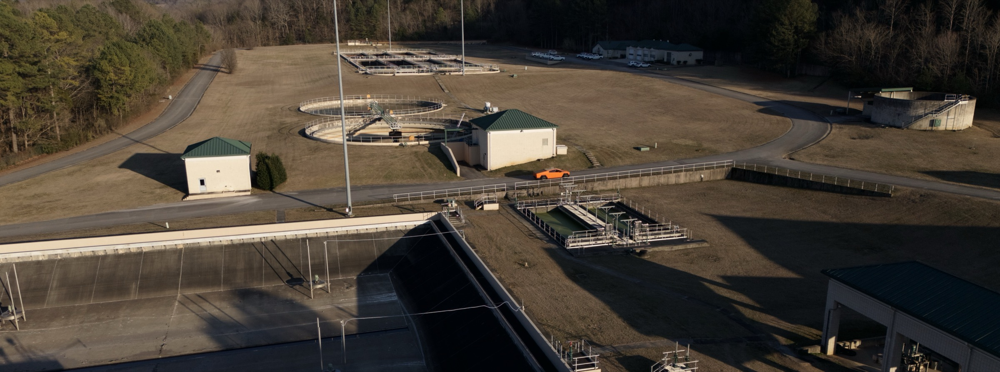

Nyad builds practical, operator-focused technology for industrial wastewater treatment - transforming one of the most critical and underserved jobs in infrastructure from manual and reactive to intelligent and proactive.

Industrial wastewater treatment is one of the most critical functions in modern infrastructure. The biology inside a treatment plant - the microorganisms breaking down contaminants - determines whether a facility stays in compliance or discharges toxins into a river.
But operators have almost no visibility into that biology. Traditional analysis requires sending samples to a lab and waiting days for results. By then, the problem has grown. Costs have increased. Compliance is at risk.
The operators told us they lack both the tools and the people. We set out to build both.
"The biological aspects of water treatment were both the most challenging and the most neglected part of the process."
Virginia Szepietowski - Co-Founder & CEO"The operators told me they lack both the tools and the people."
Virginia Szepietowski - after months on-site at treatment facilitiesThey are the final line of defense between toxic industrial wastewater and our precious waterways. That responsibility deserves world-class tools.
Nyad is named for the Naiad - ancient Greek guardians of rivers and freshwater. That name is a promise: to build technology worthy of the people protecting our water every day.
We envision a world where operators are empowered by the latest in AI - not replaced by it. Their expertise, combined with Nyad's intelligence, is how we get to a world of abundant clean water.